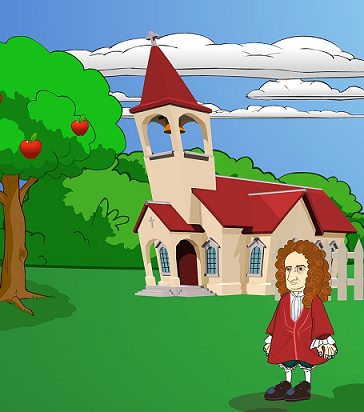

| Buddha nem örökérvényű igazságokat tanított. Ahogy ezt mondta a
Példázat a kígyóról című tanítóbeszédében: „ ... amit tanítok, éppen olyan, mint a tutaj: átkelésre szolgál és nem arra, hogy az ember birtokba vegye. Ha megértettétek [azokat], akkor a tanításokat is el kell majd hagynotok...” Ahogy látjuk, ezt a tutajt sem cipelték magukkal egykori gazdái a következő folyóig. |
|
Napjainkban a konstruktivista pedagógiában jelent meg hasonló gondolat. A korábban kialakult tudás szabja meg a mozgásteret, mely meghatározza, hogy egy új ismeret hogyan adódik hozzá a korábbi tudáshoz. Kulcsfogalom a fogalmi váltás: Annak felismerése, hogy a korábban biztosnak vélt tudás problémákat okoz. Ami korábban hasznos tudás volt, most már nem adaptív. Új helyzetre új válasz kell a régi helyett. |
 |